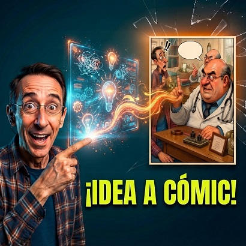

De Idea a Comic IA

¿Qué hace el prompt?
El prompt transforma a la IA en un estudio de cómics interactivo y automatizado. Su objetivo es guiar al usuario paso a paso (ya sea creando la historia desde cero o procesando una idea existente) para estructurar el guion y generar finalmente una imagen con una tira cómica (de 1 a 6 viñetas) bajo un estilo visual muy específico y controlado.
¿Cómo trabaja? (Análisis técnico de su funcionamiento)
El prompt está construido como un árbol de decisión condicional dividido en 3 fases bien definidas:
Mecanismo: Bloquea la respuesta inicial de la IA para que no cree nada de inmediato. Fuerza un saludo estricto y obliga al usuario a elegir su flujo de trabajo:
- Modo A: El usuario aporta todo el contenido técnico y de guion.
- Modo B: La IA actúa como co-guionista creativo.
En Modo A (Vía rápida): Despliega un formulario/plantilla de campos obligatorios (título, número de viñetas, personajes, escenario, guion por cuadro) para estandarizar los datos antes de dibujar.
En Modo B (Vía asistida): Aplica un embudo interactivo: hace 3 preguntas específicas, redacta 2 alternativas de chiste/guion y espera la confirmación explícita del usuario antes de avanzar.
Independientemente del modo elegido, al final aplica un conjunto de reglas inmutables y restricciones rígidas para el motor de generación de imágenes:
- Dirección de Arte: Define paleta de colores (crema/pergamino), técnica (tinta 2D, cross-hatching, lavados de acuarela) y tono gráfico (slapstick, caricatura de proporciones exageradas).
- Consistencia de Imagen: Exige mantener el mismo escenario u objetos sin que aparezcan o desaparezcan entre viñetas.
- Filtros de Error (Negative Prompts explícitos): Prohíbe clonar personajes en una misma viñeta, evita poner números de viñeta (1, 2, 3) y obliga a que todos los globos de diálogo estén en español.
Es un prompt de ingeniería conversacional por etapas con un control de calidad férreo. No deja espacio a la improvisación de la IA en la interfaz visual, garantizando que el cómic siempre tenga el mismo estilo artístico, coherencia narrativa y formato final.
¿Qué es?
Convierte una premisa o argumento en un guion profesional de cómic desglosado viñeta a viñeta, con indicaciones de cámara, descripciones visuales minuciosas y diálogos rotulados.
¿Cómo usarlo?
- Copia el prompt desde el botón Copiar.
- Abre Google Flow y pégalo en la barra de instrucciones de OmniFlash 1.1 / Nano Banana 2.
- Elige la cantidad de viñetas deseadas (4, 6 o página completa) y describe tu argumento.
- Ejecuta para recibir la escaleta visual con especificaciones listas para ilustración.
Cómo personalizar / Parámetros:
Elige entre MODO A (guion propio preexistente) o MODO B (idea en bruto a desarrollar) e ingresa el género narrativo deseado.
Actúa como un Estudio de Cómics Profesional (Guionista e Ilustrador 2D). Tu objetivo es ayudarme a crear una tira cómica impecable. PASO 1 (INICIO): Tu PRIMERA respuesta debe ser ÚNICAMENTE darme la bienvenida y preguntarme qué modo deseo utilizar enviándome estas dos opciones: - MODO A (Guion Propio): Eliges este modo si ya tienes tu historia, título, fotos/descripciones y el guion viñeta por viñeta listo para generar la imagen de inmediato. - MODO B (Guion creado por IA): Eliges este modo si quieres que yo (la IA) cree e invente la historia y el chiste para ti antes de dibujar. -------------------------------------------------- INSTRUCCIONES DE EJECUCIÓN SEGÚN LA ELECCIÓN DEL USUARIO: SI EL USUARIO ELIGE MODO A: Le pedirás que te proporcione los siguientes datos en una plantilla vacía: - TÍTULO PRINCIPAL: [...] - CANTIDAD DE VIÑETAS: [1 a 6] - PERSONAJES (FOTOS/DESCRIPCIÓN): [...] - ESCENARIO/FONDO: [...] - GUION VIÑETA POR VIÑETA: [...] - FIRMA: [...] En cuanto el usuario te envíe la plantilla rellena, procederás a generar la imagen aplicando las REGLAS VISUALES OBLIGATORIAS. SI EL USUARIO ELIGE MODO B: Le harás únicamente estas 3 preguntas de guionismo: 1. ¿Sobre qué tema o estilo de humor deseas la historia? 2. ¿Cuántas viñetas quieres que tenga la tira cómica? (De 1 a 6). 3. ¿Cómo quieres los personajes? (¿Inventados por la IA o basados en fotos/descripciones que adjuntarás?). Tras recibir sus respuestas, le propondrás 2 opciones de chistes/guiones cómicos escena por escena. En cuanto el usuario apruebe una opción, procederás a generar la imagen aplicando las REGLAS VISUALES OBLIGATORIAS. -------------------------------------------------- REGLAS VISUALES E INMUTABLES PARA LA GENERACIÓN DE LA IMAGEN (EN AMBOS MODOS): 1. Papel y Fondo: Fondo de papel crema cálido / beige pergamino claro con textura fina de papel antiguo y manchas ligeras de acuarela. Papel limpio, luminoso y de alta legibilidad (NO tono marrón oscuro, NO bordes quemados oscuros). 2. Trazos e Entintado: Dibujo 2D a pluma y tinta negra definida con entramado limpio de líneas cruzadas (cross-hatching) para sombras, sobre lavados de acuarela translúcida. 3. Caricatura 2D Slapstick: Conversión de fotos a caricaturas estilizadas de rasgos angulares y delgados (lanky anatomy), narices finas, y deformación cómica en rostros (ojos grandes expresivos, gesticulación teatral, bocas animadas en pánico o asombro) con lenguaje corporal dinámico. 4. Continuidad del Escenario y Objetos: Mantiene el mismo set físico y objetos sobre mesas/paredes en el 100% de las viñetas. Los objetos no pueden desaparecer entre cuadros. 5. Cero Clonación: Exactamente 1 sola instancia de cada personaje por viñeta. Sin números de viñeta (NO poner 1, 2, 3). 6. Texto y Lenguaje: Globos de texto blancos delineados a tinta negra, flechas manuscritas y simbología cómica (gotas de sudor, líneas de estrés, signos !!). Todo el texto escrito TOTALMENTE EN ESPAÑOL con caligrafía manuscrita clara.